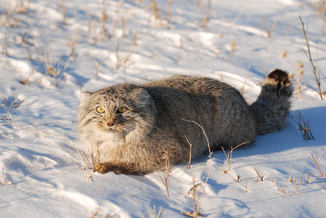
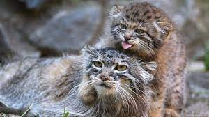

Содержание:
Описание:
Зверь довольно мелкий для диких кошачьих — размером с домашнюю кошку. Длина тела достигает 50-62 см, хвост — 23-31 см, вес — от 2,5 до 4 кг, хотя из-за пышного меха манул выглядит довольно крупным и тяжелым. Уши расставлены широко, глаза желтые, морда приплюснута, из-за чего эту кошку называют животным с недовольной мордой.
Обитание:
Основные места обитания манула – степные и полупустынные участки с разреженной и фрагментарной травянисто-кустарниковой растительностью, с выходами коренных пород, мелкорасчлененным рельефом, скальными участками, невысокие горы с останцами. Необходимое условие для обитания манула – скальные выходы и обширные участки кустарниковых зарослей, где звери устраивают гнёзда и прячутся днём. В местах обитания климат резко континентальный, температура воздуха зимой опускается до - 50º С. Манулы плохо приспособлены к передвижению по рыхлому глубокому снегу, поэтому там, где высота снежного покрова превышает 20 см, они не селятся.
Поведение и образ жизни:
Манул ведёт оседлый образ жизни. Активен преимущественно в сумерках и ранним утром, днём спит в укрытии. Логово устраивает в расщелинах скал, небольших пещерах, под камнями, в старых норах сурков, лисиц, барсуков. Окрас манула обладает исключительными камуфлирующими свойствами, помогающими ему в охоте. Сам по себе манул – самый медлительный и неповоротливый из диких котов. Манул не приспособлен к быстрому бегу, при настойчивом преследовании может стать добычей человека или крупной собаки, при этом нередко поворачивается навстречу преследователю, садится или ложится на спину. При опасности для него характерно затаивание. Он также спасается от врагов, забираясь на камни и скалы. Встревоженный манул издаёт хриплое урчание или резкое фырканье.